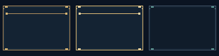
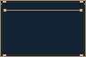
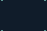
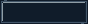
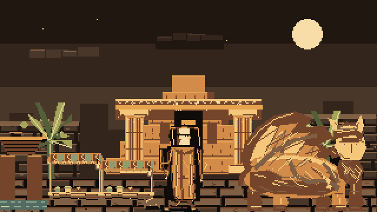
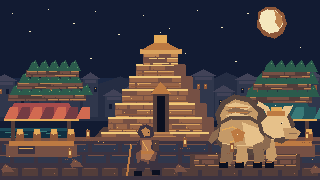

A · REFERENCE
Ночная синяя сцена, песчаник и золотой свет. Базовое утверждённое направление.
Вторая художественная итерация Babylon Inventory. Более крупная сцена, 32-цветная палитра, ступенчатая архитектура, висячие сады, торговые навесы и крылатый бык-страж. Отдельные спрайты — самостоятельные растровые PNG, не векторная имитация.



12 цветов · логическая сетка · жёсткие края · масштабирование nearest-neighbor. Это строительные блоки, не финальный экран.
Настоящие PNG из Pixel Foundry · ступенчатые линии · ограниченная палитра · без сглаживания. Значения пока демонстрационные, не торговые данные.


Состояния normal/pressed · 3 варианта · разделитель с золотыми маркерами.
A сохраняет утверждённый Babylon Inventory. B переводит сцену в тёплый Desert Dusk. C — в холодный Moonlit Cyan. Сравнивай не только отдельные цвета, но и настроение, контраст объектов и читаемость силуэтов.

Ночная синяя сцена, песчаник и золотой свет. Базовое утверждённое направление.

Тёплый угольный фон, охра, янтарь и сухая зелень. Более жаркая, земная атмосфера.

Холодная синяя ночь, серебристый камень и бирюза. Более мистическая лунная атмосфера.
Метрики измеряют только цветовое различие при одинаковой геометрии. Они не являются оценкой художественного качества. Статус всех трёх вариантов — review candidate; A остаётся базовым референсом, B и C не утверждены.

Новый растровый прогон: Ламассу с человеческой головой анфас, рогатой короной, бородой, крылом и пятью ногами; перед ним — две торговые лавки с полосатыми навесами, товарами и фонарями, за ним — колонны храмового фасада. Это промежуточный кандидат: дальше проверяем силуэт и детали в масштабе телефона, а затем добавляем глубину улицы и архитектурный орнамент.



Отдельный тестовый спрайт-лист: шаг · спокойная стойка · волочащаяся нога. Следующий этап — падение, анимационные кадры и единый масштаб персонажей.